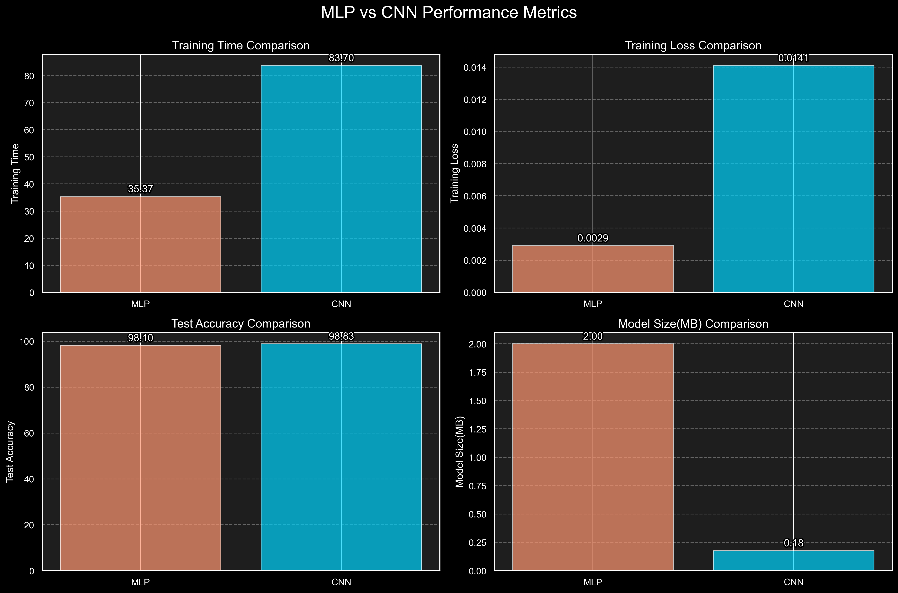
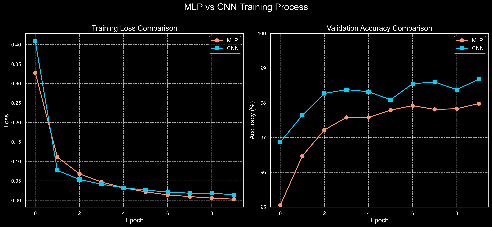
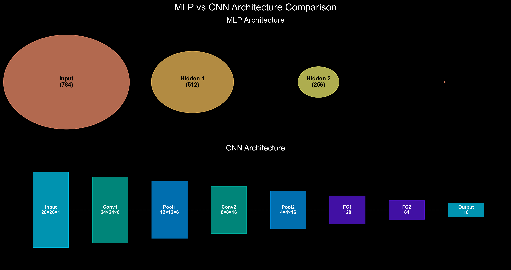

MLP vs CNN Model Comparison on MNIST Dataset
Performance Metrics
| Metric | MLP | CNN | Better Model |
|---|---|---|---|
| Training Time | 35.37 seconds | 83.70 seconds | MLP (faster) |
| Training Loss | 0.0029 | 0.0141 | MLP (lower) |
| Validation Accuracy | 97.98% | 98.68% | CNN (higher) |
| Test Accuracy | 98.10% | 98.83% | CNN (higher) |
| Model Size | 2.0 MB | 177 KB | CNN (smaller) |
Performance Radar Chart

Performance Metrics Comparison

Training Process Comparison

Model Architecture Comparison

Conclusion
This experiment successfully demonstrates the performance comparison between MLP and CNN models on the MNIST dataset. Here are the key findings:
- Accuracy: The CNN model achieves slightly higher test accuracy (98.83%) compared to the MLP model (98.10%), confirming CNN's advantage in image classification tasks.
- Training Time: The MLP model trains significantly faster (35.37 seconds) than the CNN model (83.70 seconds), making it more efficient for rapid prototyping.
- Training Loss: The MLP model achieves a lower final training loss (0.0029) compared to the CNN model (0.0141), which might indicate potential overfitting to the training data.
- Model Size: Despite having a simpler structure, the MLP model has a larger file size (2.0MB) than the CNN model (177KB), indicating that MLPs require more parameters to achieve comparable performance.
- Overall Assessment: For the MNIST dataset, both models achieve high accuracy (>98%), with the CNN showing a slight edge. However, the MLP's faster training time makes it a viable option for this relatively simple image classification task.
This experiment validates CNN's advantages in image processing tasks while also demonstrating that for simpler datasets like MNIST, a well-designed MLP can achieve competitive results with faster training times.